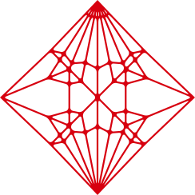
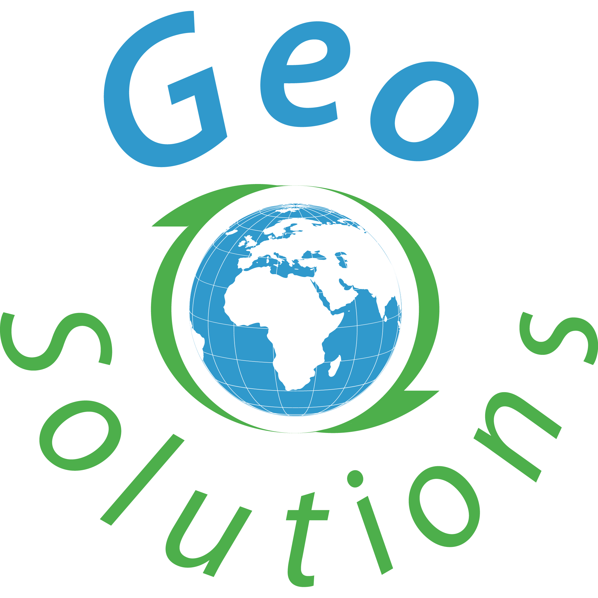

OGC APIs, an introduction with GeoServer
Hands-on tour of the OGC API family (Features, Tiles, Maps and more) served by GeoServer.
Vector tiles with GeoServer
Producing and styling vector tiles with GeoServer for fast, client-side rendered maps.


FOSS4G Hiroshima 2026 · 30 August – 5 September 2026
Hands-on tour of the OGC API family (Features, Tiles, Maps and more) served by GeoServer.
Producing and styling vector tiles with GeoServer for fast, client-side rendered maps.